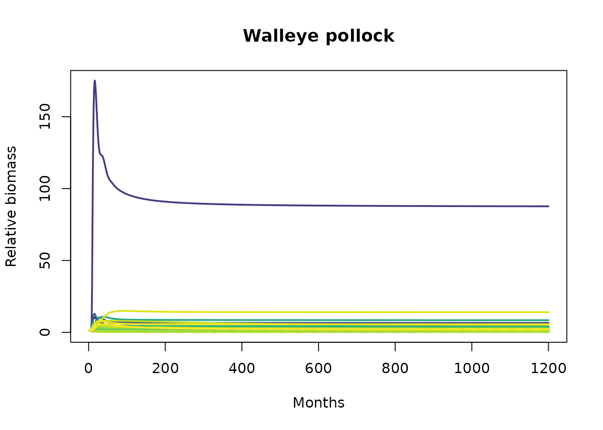
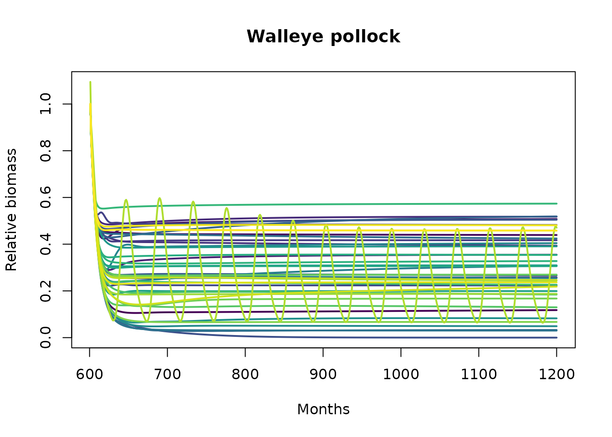

Generating an Rsim ensemble with Ecosense
George A. Whitehouse
2024-06-05
Source:vignettes/ecosense.Rmd
ecosense.RmdRpath is an R implementation of the food web modeling program Ecopath
with Ecosim (EwE; Christensen and Pauly 19921, Walters et al. 19972). For full
documentation of the Rpath package see Lucey et al. (20203). Ecosense is a Monte
Carlo approach to generating an ensemble of plausible ecosystem
parameter sets from a single Rpath model for use with
rsim.run, the time-dynamic counterpart to Rpath. For
complete documentation of Ecosense see Whitehouse and Aydin (20204). To use
this vignette it is recommended you are familiar with Rpath and its
basic operations.
Ecosense
This vignette includes the example Rpath models from Whitehouse and
Aydin (2020) for the eastern Bering Sea (EBS), eastern Chukchi Sea
(ECS), and Gulf of Alaska (GOA) marine food webs, and uses the EBS model
in an example. Each of these models has 50–54 functional groups,
including one fishery, one primary producer, two detrital compartments,
and there are no stanzas. To use Ecosense you need an
rpath.params object and the corresponding
rsim.scenario object. First, load the unbalanced models,
balance them, and setup the rsim scenario objects.
# load the unbalanced models
# load("data/Ecosense.EBS.rda")
# load("data/Ecosense.ECS.rda")
# load("data/Ecosense.GOA.rda")
# balance the models
EBS_bal <- rpath(Ecosense.EBS)
ECS_bal <- rpath(Ecosense.ECS)
GOA_bal <- rpath(Ecosense.GOA)
# create rsim scenario objects
EBS_scene <- rsim.scenario(EBS_bal, Ecosense.EBS, years=1:100)
ECS_scene <- rsim.scenario(ECS_bal, Ecosense.ECS, years=1:100)
GOA_scene <- rsim.scenario(GOA_bal, Ecosense.GOA, years=1:100)
# # source ecosense.R
# source("R/ecosense.R", local = knitr::knit_global())
# ls()Setting up Ecosense
Full sets of Ecosim parameter sets are drawn from distributions
centered on the original Rpath parameter estimates. The width of the
distribution for each parameter is defined in the data pedigree of the
rpath.params object. The drawn parameters include biomass,
P/B, Q/B, diet composition, and natural mortality (i.e., M zero).
Additionally, vulnerability and handling time from the predator prey
functional response can be drawn over a specified range (lower/upper
bounds in log space-1) for each individual predator-prey
interaction.
A single parameter set can be generated with a call to
rsim.sense. The object returned by rsim.sense
is equivalent to the list of parameters in an rsim.scenario
object (e.g., scenario_object$params).
# One set of Ecosim parameters for the EBS model
rsim.sense(EBS_scene,Ecosense.EBS,Vvary = c(0,0), Dvary = c(0,0))## Rsim parameters for
##
## NumGroups NumLiving NumDetritus NumFleets
## 1 54 51 2 1
##
## $params also includes:
## [1] "NUM_GROUPS" "NUM_LIVING" "NUM_DEAD" "NUM_GEARS"
## [5] "NUM_BIO" "spname" "spnum" "B_BaseRef"
## [9] "MzeroMort" "UnassimRespFrac" "ActiveRespFrac" "FtimeAdj"
## [13] "FtimeQBOpt" "PBopt" "NoIntegrate" "HandleSelf"
## [17] "ScrambleSelf" "PreyFrom" "PreyTo" "QQ"
## [21] "DD" "VV" "HandleSwitch" "PredPredWeight"
## [25] "PreyPreyWeight" "NumPredPreyLinks" "FishFrom" "FishThrough"
## [29] "FishQ" "FishTo" "NumFishingLinks" "DetFrac"
## [33] "DetFrom" "DetTo" "NumDetLinks" "BURN_YEARS"
## [37] "COUPLED" "RK4_STEPS" "SENSE_LIMIT"Each Ecosim parameter set drawn with Ecosense can be subject to an
initial simulation, also known as a burn-in, to eliminate unstable
parameter sets. This instability usually results from incompatible draws
of parameter sets that either lead to uncontrolled population growth or
population crash. Such as predator consumption and production that
exceeds the production of prey. The length of the burn-in period can be
set in the original rsim.scenario object.
# Setting the burn-in period in the EBS scenario object to 50 years.
EBS_scene$params$BURN_YEARS <- 50During burn-in, if the biomass of a functional group exceeds 1,000x its starting biomass or decreases to less than 1/1,000 its starting biomass, the ecosystem parameter set is rejected and not retained for further analysis. A 50 year burn-in period is generally sufficient to eliminate most of the unstable configurations.
Generating an ensemble of Ecosim parameter sets
To generate an ensemble of parameter sets you can repeat the call to
rsim.sense in a loop. First, determine the number of
parameter sets you wish to generate and create lists to store those
parameter sets. Set up another vector to keep track of which generated
parameter sets were rejected or retained.
NUM_RUNS <- 1000 # how many ecosystem parameter sets to generate
parlist<-as.list(rep(NA,NUM_RUNS)) # create lists to store the generated parameters
kept<-rep(NA,NUM_RUNS) # object to keep track of kept systems
set.seed(666) # Optional, set seed so output can be replicatedIn this example we will generate 1,000 parameter sets (NUM_RUNS) for
the eastern Bering Sea food web model. parlist[[i]] is the object that
will store the ith generated parameter set. Optionally, you can use
set.seed to replicate these results.
The following loop generates an ensemble of Ecosim parameters for the
EBS food web model, assigns the generated base biomass (B_BaseRef) to
the starting biomass in the rsim.scenario object, sets the
burn years to 50, runs a simulation with rsim.run, and
rejects or retains parameter sets based on the boundaries described
above.
for (i in 1:NUM_RUNS){
EBSsense <- EBS_scene # scenario object
# INSERT SENSE ROUTINE BELOW
parlist[[i]]<- EBS_scene$params # Base ecosim params
parlist[[i]]<- rsim.sense(EBS_scene,Ecosense.EBS,Vvary = c(-4.5,4.5), Dvary = c(0,0)) # Replace the base params with Ecosense params
EBSsense$start_state$Biomass <- parlist[[i]]$B_BaseRef # Apply the Ecosense starting biomass
parlist[[i]]$BURN_YEARS <- 50 # Set Burn Years to 50
EBSsense$params <- parlist[[i]] # replace base params with the Ecosense generated params
EBStest <- rsim.run(EBSsense, method="AB") # Run rsim with the generated system
failList <- which(is.na(EBStest$end_state$Biomass))
{if (length(failList)>0)
{cat(i,": fail in year ",EBStest$crash_year,": ",EBStest$params$spname[failList],"\n"); kept[i]<-F; flush.console()}
else
{cat(i,": success!\n"); kept[i]<-T; flush.console()}} # output for the console
parlist[[i]]$BURN_YEARS <- 1
}This loop produces output in the console noting whether the generated parameter set was a success or failure, the year the ecosystem “crashed”, and which group(s) were responsible for the crash. Here are the results for the first two generated parameter sets:
1 : fail in year 1 : Squids
2 : fail in year 7 : Salmon returning
The first two ecosystems both failed, the first in year one and the second in year seven. Squids crashed in the first ecosystem and Salmon returning in the second. The 52nd generated parameter set was the first to survive the 50 year burn-in:
52 : success!
To determine which of the 1,000 generated systems survived burn-in, how many survived burn-in and what the rejection rate was:
KEPT <- which(kept==T); KEPT # the number associated with the kept system## [1] 52 68 69 78 85 129 139 163 174 195 216 224 245 267 285 303 327 359 373
## [20] 378 382 421 447 474 489 546 575 600 613 628 662 705 725 797 813 848 889 890
## [39] 893 902 903 938 944
nkept <- length(KEPT); nkept # how many were kept## [1] 43
1-(nkept/NUM_RUNS) # rejection rate## [1] 0.957The numbers in KEPT can be used to access the retained parameter sets in parlist[[i]]. In this example, 43 parameter sets were retained and the rejection rate for generated parameter sets was 95.7%.
All of the retained Rsim parameter sets can be run through a simulation with another for loop. This loop subjects each of the 43 retained parameter sets in this example to a 100 year simulation without any additional perturbations, the first 50 years of which is the burn-in period.
ecos <- as.list(rep(NA,length(KEPT))) # lists for simulated ecosystems
k <- 0 # counter for simulated ecosystems
for (i in KEPT) {
EBS_scene$start_state$Biomass <- parlist[[i]]$B_BaseRef # set the starting Biomass to the generated values
EBSsense <- EBS_scene # set up the scenario object
EBSsense$params <- parlist[[i]] # set the params in the scenario object equal to the generated params.
EBSsense$BURN_YEARS <- -1 # no burn-in period
k <- k + 1 # set the number for the simulated ecosystem
ecos[[k]] <- rsim.run(EBSsense,method='AB') # run rsim.run on the generated system
print(c("Ecosystem no.",k,"out of",nkept)) # progress output to console
}Because biomass can differ greatly between the generated parameter sets, relative biomass can be used for plotting. This loop calculates the relative biomass of each group in each system, relative to their starting biomass, as drawn by Ecosense.
relB_ecos <- as.list(rep(NA,length(KEPT))) # list to output relative biomass
k <- 0
for (i in 1:nkept) {
spname <- colnames(ecos[[i]]$out_Biomass[,2:ncol(ecos[[i]]$out_Biomass)])
biomass <- ecos[[i]]$out_Biomass[, spname]
n <- ncol(biomass)
start.bio <- biomass[1, ] # the drawn starting biomass
start.bio[which(start.bio == 0)] <- 1
rel.bio <- matrix(NA, dim(biomass)[1], dim(biomass)[2])
for(isp in 1:n) rel.bio[, isp] <- biomass[, isp] / start.bio[isp] # biomass relative to biomass at t=1
colnames(rel.bio) <- spname
k <- k + 1
relB_ecos[[k]] <- rel.bio
}Here’s an example plot of walleye pollock from all the retained Rsim parameter sets. First setup a matrix to store the pollock trajectories from the simulations with the retained parameter sets.
this_species <- "Walleye pollock"
plot_mat <- matrix(nrow=1200, ncol=nkept) # matrix of pollock trajectories from all generated systems
for (i in 1:nkept) {
plot_mat[,i] <- relB_ecos[[i]][,this_species]
}Then plot all the trajectories:
plot_col <- viridis(nkept)
#layout(matrix(c(1,1,1,1,1,1,2,2), nrow = 1, ncol = 8, byrow = TRUE))
plot(1:1200, relB_ecos[[1]][,this_species], type='n', xlab="Months",
ylab="Relative biomass", ylim=c(min(plot_mat),max(plot_mat)), main=this_species)
# one line for pollock in each of the generated systems
for (i in 1:nkept) {
lines(1:1200, relB_ecos[[i]][,this_species], lwd=2, col=plot_col[i])
}
# distribution of pollock relative biomasses
boxplot(plot_mat[1200,], ylim=c(min(plot_mat),max(plot_mat)), yaxt='n')
axis(side=2, at=c(seq(0,150,50)), tick=TRUE, labels=F)Each line in the left panel is the relative biomass trajectory of walleye pollock over the 100 year simulation with the retained Rsim parameter sets.
Run the kept systems with a perturbation
When working with an ensemble such as this, we are often interested
in doing the same perturbation across all ensemble members to describe a
range of potential outcomes. In this example, we’ll increase the fishing
mortality on walleye pollock using the adjust.fishing
function. The first 50 years of the simulation are the burn-in period.
So, the perturbation is put in place from year 51 to 100, and in this
example we increase walleye pollock fishing mortality by 2X.
ecos_sp <- as.list(rep(NA,length(KEPT))) # lists for simulated ecosystems
k <- 0 # counter for simulated ecosystems
for (i in KEPT) {
EBS_scene$start_state$Biomass <- parlist[[i]]$B_BaseRef # set the starting Biomass to the generated values
EBSsense <- EBS_scene # set up the scenario object
EBSsense <- adjust.fishing(EBSsense, "ForcedFRate", group=this_species, sim.year=51:100, value=2) # perturb pollock FRate
EBSsense$params <- parlist[[i]] # set the params in the scenario object equal to the generated params.
EBSsense$BURN_YEARS <- -1 # no burn-in period
k <- k + 1 # set the number for the simulated ecosystem
ecos_sp[[k]] <- rsim.run(EBSsense,method='AB') # run rsim.run on the generated system
print(c("Ecosystem no.", k, "out of", nkept)) # progress output to console
}To visualize the results, we use relative biomass again but this time relative to biomass at the end of the burn-in period (year 50). That is the point in time where the perturbation began and the point from which we want to measure any response or change.
relB_ecos_sp <- as.list(rep(NA,length(KEPT)))
k <- 0
for (i in 1:nkept) {
spname <- colnames(ecos_sp[[i]]$out_Biomass[,2:ncol(ecos_sp[[i]]$out_Biomass)])
biomass <- ecos_sp[[i]]$out_Biomass[, spname]
n <- ncol(biomass)
start.bio <- biomass[600, ] # end of burn-in
start.bio[which(start.bio == 0)] <- 1
rel.bio <- matrix(NA, dim(biomass)[1], dim(biomass)[2])
for(isp in 1:n) rel.bio[, isp] <- biomass[, isp] / start.bio[isp] # biomass relative to the end of burn-in biomass
colnames(rel.bio) <- spname
k <- k + 1
relB_ecos_sp[[k]] <- rel.bio
}Plot the trajectories for walleye pollock from this perturbation. Note, the x-axis starts at the begining of the perturbation (January of year 51).
plot_mat_sp <- matrix(nrow=1200, ncol=nkept)
for (i in 1:nkept) {
plot_mat_sp[,i] <- relB_ecos_sp[[i]][,this_species]
}
#layout(matrix(c(1,1,1,1,1,1,2,2), nrow = 1, ncol = 8, byrow = TRUE))
plot(601:1200, relB_ecos_sp[[1]][601:1200,this_species], type='n', xlab="Months",
ylab="Relative biomass", ylim=c(min(plot_mat_sp[601:1200,]),max(plot_mat_sp[601:1200,])), main=this_species)
for (i in 1:nkept) {
lines(601:1200, relB_ecos_sp[[i]][601:1200,this_species], lwd=2, col=plot_col[i])
}
Biomass for walleye pollock decreased in all 43 ecosystems in response to the perturbation.
Walleye pollock are a nodal species in the eastern Bering Sea food web and such a perturbation as in this example might illicit a response from many functional groups across the food web. Here is an example boxplot of the distribution of biomass outcomes for all the living functional groups relative to their biomass at the start of the perturbation.
sp_perturb_out <- matrix(nrow=nkept, ncol=(EBS_bal$NUM_LIVING+EBS_bal$NUM_DEAD))
for(i in 1:nkept){
sp_perturb_out[i,] <- relB_ecos_sp[[i]][1200,]
}
colnames(sp_perturb_out) <- colnames(relB_ecos_sp[[1]])
par(mfrow=c(1,1), mar=c(9,3,0.5,0.5))
boxplot(sp_perturb_out, outline=FALSE, las=2, cex.axis=0.6)
abline(h=1, lty=2)
Christensen V, Pauly D (1992) Ecopath II-a software for balancing steady-state ecosystem models and calculating network characteristics. Ecol Model 61:169-185. doi:10.1016/0304-3800(92)90016-8↩︎
Walters C, Christensen V, Pauly D (1997) Structuring dynamic models of exploited ecosystems from trophic mass-balance assessments. Rev Fish Biol Fish 7:139-172. doi:10.1023/a:1018479526149↩︎
Lucey SM, Gaichas SK, Aydin KY (2020) Conducting reproducible ecosystem modeling using the open source mass balance model Rpath. Ecol Model 427:11. doi:10.1016/j.ecolmodel.2020.109057↩︎
Whitehouse GA, Aydin KY (2020) Assessing the sensitivity of three Alaska marine food webs to perturbations: an example of Ecosim simulations using Rpath. Ecol Model 429:16. doi:10.1016/j.ecolmodel.2020.109074↩︎